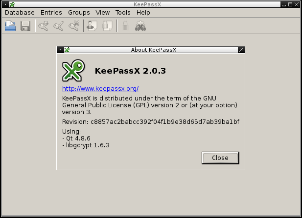
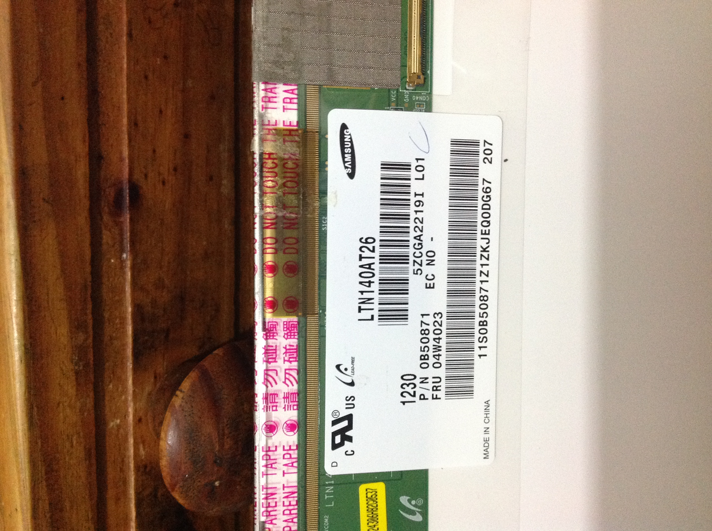
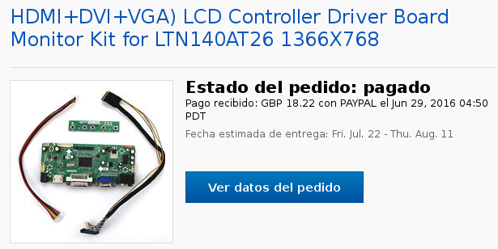

Compile keepass 2.0.3 on Linux
KeepassX is a graphical password management system, the webpage is
www.keepassx.org
KeepassX webpage states: "KeePassX is an application for people with extremly high demands on secure personal data management. It has a light interface, is cross platform and published under the terms of the GNU General Public License."
These steps have been executed on a Debian
Linux 8.6.0 but for an experienced System
Administrator/Hacker this should be trivial.
You can look at older related posts:
First you should have these packages installed:
apt-get install cmake g++ libqt4-core libqt4-dev libgcrypt-dev zlib1g zlib1g-dev
Now you can download the latest keepassX package and compile it:
wget https://www.keepassx.org/releases/2.0.3/keepassx-2.0.3.tar.gz
tar zxvf keepassx-2.0.3.tar.gz
cd keepassx-2.0.3/
mkdir build
cd build
cmake -DCMAKE_INSTALL_PREFIX=/usr/local ..
As root:
make install
Now you could for example, add the access on a fluxbox window manager:
It works.

Published: Friday, December 09, 2016
admin security
Check the battery power from command line on linux
If you want to check from a script the state from the battery on the linux operating
system, it is as easy as looking this file:
cat /sys/class/power_supply/BAT0/capacity_level
Normal
And this file gives the percentage of charge, in this example 97%:
cat /sys/class/power_supply/BAT0/capacity
97
Published: Friday, December 09, 2016
admin
An additional LCD notebook monitor
Once i had a notebook, it was red, lenovo, z80... rest in peace. One day, after using
it helping at
an ONG Called Ser Fiscal it started
with problems... at that ONG i was helping with the independant control of the elections
documenting fraud and gave some technical assitance. Some voluntary work.
But after that point in time, something very bad started to happen with that notebook and
finally it never started again. Of course i went to Lenovo here in Argentina, i do not know
now, i suppose it is not much different, but the official technical service told me that the
notebook was a rare model and they may not have the parts, in that case i would not have my
money back anyway... (yes, lets cry together with a cold beer).
Whathever, i wanted to recover something from the notebook, i could reuse the hard disk, i can
sell the memory, and i wanted to reuse the monitor (if possible).
Step 1: Obtain the monitor code
You will have to open the notebook, it is supposed to be broken anyway. Be carefull,
you should extract the monitor, and take some pictures from the back. Write down the numbers,
the seller will likelly ask you for them to confirm if he has the circuit for it. If you
do not feel secure, ask a friend who may have more experience doing that.



Save the pictures, the selled will likelly ask you for them.
Step 2: Look for a selled of the circuit
I obtained it at ebay, the article at that time looked like this:

I bought it from a selled called
xionchung2013
This may sound like publicity, honestly i am just happy because i got the article and i had good
luck that it worked. But you wouldn't believe the troubles i had. In Argentina we had a not so nice
government from 2010 to 2015 and the possibility to import things, even they are not done here was arbitrary:
only people with friends in the government could do that, and you can imagine that somebody like me is
not the profile of somebody that makes friends with politicians. Resuming, the selled sent the product and
it never arrived, luckyly it was returned to him, i had to pay him again for the delivery, and the
second time i contacted the postal office and followed like a crazy the package.
Yes, lets
cry together again with a cold beer in a bar.
Step 3: Connect it and use it!
I have to post some pictures about how it looks like. It is great!
Step 4: Enabling the secondary monitor in linux
I have this script to enable the monitor in the office or at home:
walter@arsat:~$ cat monitors.sh
#!/bin/bash
if [[ "$1" == "office" ]]; then
xrandr --auto --output eDP1 --mode 1360x768 --left-of VGA1
else
# CASA
echo "En casa";
xrandr --auto --output VGA1 --mode 1920x1200 --left-of eDP1
fi;
Published: Friday, December 09, 2016
admin
Check the battery power from command line on linux
fallocate -l 4G diskimagefile.img
cryptsetup -y -v luksFormat diskimagefile.img
WARNING!
========
This will overwrite data on diskimagefile.img irrevocably.
Are you sure? (Type uppercase yes): YES
Enter passphrase:
Verify passphrase:
Command successful.
Mount the virtual device that manages:
cryptsetup luksOpen diskimagefile.img backup1
If you have not done it yet, and it is a new disk, you can give the
disk a format:
mkfs.ext3 /dev/mapper/backup1
Mount:
mount /dev/mapper/backup1 /mnt/secure
Modify the password:
sudo cryptsetup luksChangeKey diskimagefile.img
Enter passphrase to be changed:
Enter new passphrase:
Verify passphrase:
Unmount and close the secure disk:
umount /mnt/secure
cryptsetup luksClose backup1
Published: Friday, December 09, 2016
admin
Unziping large files in linux copied from windows
In Windows 7 i created a large ZIP file (around 15 Gigas). I wanted to
move it to a linux machine and unzip it there. But once in the linux
machine, it produced this error:
unzip Windows\ 7\ Clone.zip
Archive: Windows 7 Clone.zip
warning [Windows 7 Clone.zip]: 15415149290 extra bytes at beginning or within zipfile
(attempting to process anyway)
error [Windows 7 Clone.zip]: start of central directory not found;
zipfile corrupt.
(please check that you have transferred or created the zipfile in the
appropriate BINARY mode and that you have compiled UnZip properly)
After trying some things i resolved it like this:
7za x Windows\ 7\ Clone.zip
7-Zip (A) [64] 9.20 Copyright (c) 1999-2010 Igor Pavlov 2010-11-18
p7zip Version 9.20 (locale=en_US.UTF-8,Utf16=on,HugeFiles=on,4 CPUs)
Processing archive: Windows 7 Clone.zip
Extracting Windows 7 Clone/Windows 7 Clone.vbox
Published: Thursday, August 25, 2016
admin
Installing Apache from scratch
1) A required library:
apt-get install libpcre++-dev
2) Obtain the sources:
wget "http://apache.dattatec.com//httpd/httpd-2.4.18.tar.bz2"
tar jxvf httpd-2.4.18.tar.bz2
wget "http://mirrors.nxnethosting.com/apache//apr/apr-1.5.2.tar.gz"
wget http://apache.dattatec.com//apr/apr-util-1.5.4.tar.gz
cd httpd-2.4.18/srclib
tar zxvf ../../apr-1.5.2.tar.gz
tar zxvf ../../apr-util-1.5.4.tar.gz
ln -s apr-1.5.2/ apr
ln -s apr-util-1.5.4/ apr-util
cd ..
./configure --enable-ssl \
--prefix=/usr/local/apache2/ \
--enable-so --with-included-apr \
--enable-rewrite --enable-rewrite --enable-proxy --enable-cgi
make
Published: Thursday, August 25, 2016
admin apache
Compile keepass 2.0.2 on Debian Linux Jeesie
KeepassX webpage states: "KeePassX is an application for people with extremly high demands on secure personal data management. It has a light interface, is cross platform and published under the terms of the GNU General Public License."
These steps have been executed in Debian Linux 8.2.0 Jeesie but for an experienced System Administrator/Hacker this should be trivial.
Some time ago i explained
how to install KeepassX 0.4.3
but a newer version is available and i wanted to have it.
First you should have these packages installed:
apt-get install cmake
apt-get install g++
apt-get install libqt4-core
apt-get install libqt4-dev
apt-get install libgcrypt-dev
apt-get install zlib1g zlib1g-dev
Now you can download the latest keepassX package and compile it:
wget https://www.keepassx.org/releases/2.0.2/keepassx-2.0.2.tar.gz
tar zxvf keepassx-2.0.2.tar.gz
cd keepassx-2.0.2
mkdir build
cd build
cmake -DCMAKE_INSTALL_PREFIX=/usr/local ..
As root:
make install
Published: Saturday, February 20, 2016
admin security
Compile keepass 0.4.3 on Debian Linux wheezy
I have switched from Ubuntu to Debian, and am happy i did so.
There are enough blogs talking about their pros and i only ask why i did it not before.
Well, when you wish to compile keepassx on Debian you may
find one or two obstacles, i hope this post targets them
and saves you some time.
Get It:
wget http://www.keepassx.org/releases/keepassx-0.4.3.tar.gz
tar zxvf keepassx-0.4.3.tar.gz
cd keepassx-0.4.3/
mkdir build
I recommend you to read the INSTALL file
apt-get install libqt4-dev
apt-get install libx11-dev
apt-get install libx11-dev
And finally you have to install this one:
apt-get install libxtst-dev
Yes, it do not leaves you given dependencies,
i fixed it this way:
wget http://ftp.de.debian.org/debian/pool/main/x/x11proto-record/x11proto-record-dev_1.14.2-1_all.deb
dpkg -i x11proto-record-dev_1.14.2-1_all.deb
And now you go!
apt-get instal libxtst-dev
qmake
make
And again, second challenge, you may find this
message trying to compile:
lib/random.cpp: In function [void initStdRand()]:
lib/random.cpp:98:19: error: [getpid] was not declared in this scope
I did this:
vi ./src/lib/random.cpp
Basically you just modify the file, before it looks like:
#include "random.h"
#if defined(Q_WS_X11) || defined(Q_WS_MAC)
#include
And it should look like:
#include "random.h"
#include <unistd.h>
#if defined(Q_WS_X11) || defined(Q_WS_MAC)
#include
Published: Wednesday, March 11, 2015
admin security
fb conflicting fb hw usage inteldrmfb vs VESA VGA - removing generic driver
After upgrading to Ubuntu 14.04.1 the machine hung after a very short
passage through an attempt to start the graphical interface. With some
luck, i pressed ctrl+alt+f1 to be on the terminal and avoided to use
the graphics, hence avoided the crash. But i would recommend you to just start with a live cd and mount the filesystem.
I found this in the /var/log/kern.log .
After googling and looking at a lot of suggestions, what worked for me was:
apt-get install nvidia-331
apt-get remove xserver-xorg-video-nouveau
vi /etc/modprobe.d/nvidia-graphics-drivers.conf
blacklist nouveau
blacklist lbm-nouveau
blacklist nvidia-173
blacklist nvidia-96
alias nvidia nvidia-current
This will do it (or most likely should). Then you may have issues with the desktop that do not starts.. but that may be another story.
Published: Sunday, October 12, 2014
admin
Ubuntu 12.04 post install i would do
These are some steps i like to do after installing Ubuntu,
these apply to 12.04 but if you analyze what they do you may use them in other releases.
1) I don't like to see the dnsmasq service doing a party with my resources:
vi /etc/NetworkManager/NetworkManager.conf
Comment this line "dns=dnsmasq"
sudo restart network-manager
2) I do not need any avahi-daemon doing things for me i do not need:
apt-get remove avahi-daemon
3) Setup some basic (but powerful) firewall rules:
4) Change unity
For 14.04
apt-get remove unity unity-2d unity-2d-panel unity-2d-spread unity-asset-pool unity-services unity-lens-files unity-lens-music unity-lens-applications gir1.2-unity-5.0 unity-common indicator-sound indicator-power indicator-appmenu libindicator7 indicator-application indicator-datetime indicator-messages libnux-4.0-0 nux-tools libunity-misc4 unity-2d-common
apt-get install gnome-core
Published: Friday, October 10, 2014
admin ubuntu
Creating a RAMFS
With the previous method i found it slow for being a
ram disk, i read that ramfs does no swapping, i want
to test it:
mount -t ramfs -o size=50m ramfs /ramcache
This is a good resource:
http://www.thegeekstuff.com/2008/11/overview-of-ramfs-and-tmpfs-on-linux/
Published: Tuesday, June 12, 2012
admin
glib lotus notes java memory corruption
Today i updated some packets related to IBM lotus notes
and a problem with libraries caused a great and long
investigation process to have lotus notes back.
I tried lot of things: reinstalling, purging the
packets, installing the same version again... nothing worked. Today i found the
solution
here.
It says:
[...] After some research I found the problem: libnuma.
If this lib exists in the system the Notes Client loads data forever.
[...]
The solution is:
apt-get remove libnuma1
Published: Tuesday, April 24, 2012
admin
How to obtain the flash videos in Firefox 4
Flash videos were stored in /tmp/FlashXXXX and i was able to copy
them to another place like cp /tmp/FlashXXX ~/Desktop/new.video.mpeg.
Since Firefox 4 i thought for a moment that everything
changed and my happy days were over but i was wrong, i remembered that with Linux there are no sad days.
How to obtain the flash videos with Firefox 4:
When the video already finished loading in the browser (being Youtube or any other), do this:
ps -ef | grep libflashplayer.so | grep -v grep
walter 20040 19812 9 11:52 ? 00:53:34 /usr/lib/firefox-3.6.17/plugin-container /home/walter/.mozilla/plugins/libflashplayer.so 19812 plugin true
Now, with the PID, inspect what it is opening:
root@talento:~# lsof -p 20040 | grep Flash
lsof: WARNING: can't stat() fuse.gvfs-fuse-daemon file system /home/walter/.gvfs
Output information may be incomplete.
plugin-co 20040 walter 16u REG 8,2 1249930 21708868 /tmp/FlashXXQANNm2 (deleted)
root@talento:~#
You are interested in the file descriptor id, these are the file descriptors from that process:
root@talento:~# ls -la /proc/20040/fd/
total 0
dr-x------ 2 walter walter 0 2011-04-30 21:12 .
dr-xr-xr-x 7 walter walter 0 2011-04-30 21:06 ..
lr-x------ 1 walter walter 64 2011-04-30 21:12 0 -> /dev/null
lrwx------ 1 walter walter 64 2011-04-30 21:12 1 -> /home/walter/.xsession-errors
l-wx------ 1 walter walter 64 2011-04-30 21:12 10 -> pipe:[18679239]
lr-x------ 1 walter walter 64 2011-04-30 21:12 11 -> pipe:[18679240]
l-wx------ 1 walter walter 64 2011-04-30 21:12 12 -> pipe:[18679240]
lrwx------ 1 walter walter 64 2011-04-30 21:12 13 -> socket:[18679243]
lr-x------ 1 walter walter 64 2011-04-30 21:12 14 -> /home/walter/.mozilla/firefox/2te1hj2x.default/cert8.db
lr-x------ 1 walter walter 64 2011-04-30 21:12 15 -> /home/walter/.mozilla/firefox/2te1hj2x.default/key3.db
lrwx------ 1 walter walter 64 2011-04-30 21:15 16 -> /tmp/FlashXXQANNm2 (deleted)
lr-x------ 1 walter walter 64 2011-04-30 21:16 17 -> pipe:[19890054]
l-wx------ 1 walter walter 64 2011-04-30 21:16 18 -> pipe:[19890054]
lr-x------ 1 walter walter 64 2011-04-30 21:16 19 -> pipe:[19890055]
lrwx------ 1 walter walter 64 2011-04-30 21:12 2 -> /home/walter/.xsession-errors
l-wx------ 1 walter walter 64 2011-04-30 21:16 20 -> pipe:[19890055]
lrwx------ 1 walter walter 64 2011-04-30 21:16 21 -> socket:[19890059]
lrwx------ 1 walter walter 64 2011-04-30 21:12 22 -> socket:[19338003]
lr-x------ 1 walter walter 64 2011-04-30 21:12 23 -> anon_inode:inotify
lrwx------ 1 walter walter 64 2011-04-30 21:12 3 -> socket:[18679123]
lrwx------ 1 walter walter 64 2011-04-30 21:12 4 -> anon_inode:[eventpoll]
lrwx------ 1 walter walter 64 2011-04-30 21:12 42 -> socket:[18679124]
lrwx------ 1 walter walter 64 2011-04-30 21:12 5 -> socket:[18679236]
lrwx------ 1 walter walter 64 2011-04-30 21:12 6 -> socket:[18679237]
lr-x------ 1 walter walter 64 2011-04-30 21:12 7 -> pipe:[18679238]
l-wx------ 1 walter walter 64 2011-04-30 21:12 8 -> pipe:[18679238]
lr-x------ 1 walter walter 64 2011-04-30 21:12 9 -> pipe:[18679239]
What is of our interest if the Flash process, displayed in the previous lines.
Now, you can copy the file to a safe place, because, if you close Firefox, those files are released and lost.
cp /proc/20040/fd/16 ~/Desktop/A.Movie.mpeg
Now if you want to put everything in a script:
root@talento:~# cat saveflash.sh
#!/bin/bash
PID=`ps -ef | grep libflashplayer.so | grep -v grep | awk '{print $2}'`
FD=`lsof -p $PID | grep Flash | awk '{print $4}' | sed 's/u$//'`
cp /proc/$PID/fd/$FD "$1"
And remember, you can "invite me a coffee" :)
Published: Saturday, April 30, 2011
admin
Errors compiling VMware Server on Fedora 12
Hi! Today i downloaded vmware server to use it on my Linux workstation.
I am using Fedora 12 with the latest kernel update so i had not much hope to compile the vmware kernel modules without some troubleshooting.
After solving the problems, here i share the solutions i hope to help you. If you find it useful, remember that you can Invite me a kaffee ! :)
- 1. Download the latest VMware workstation (It is free)
https://www.vmware.com/tryvmware/p/activate.php?p=server20amp;lp=1amp;ext=1
Note: I downloaded the rpm version.
- 2. Install it: yum install VMware-server-2.0.2-203138.i386.rpm
- 3. Try to compile the modules: vmware-config.pl
Ok.. in this moment a lot of warnings and errors appear between them, errors with vmnet, vmci, etc...
make[1]: Leaving directory `/usr/src/kernels/2.6.32.10-90.fc12.i686#39;
Unable to build the vmnet module.
Unable to build the vmci module.
- 4. Patch the modules:
Download from http://www.erdemap.com/store/2.6.32.10-90.fc12.vmmon.tar.gz
wget http://www.erdemap.com/store/2.6.32.10-90.fc12.vmmon.tar.gz
- 5. unzip amp; untar it.
- 6. execute the patch shell script *inspect it first, it is very VERY basic*
- 7. After installing the patches, execute the vmware-config.pl
Starting VMware services:
Virtual machine monitor [ OK ]
Virtual ethernet [ OK ]
Bridged networking on /dev/vmnet0 [ OK ]
Host-only networking on /dev/vmnet1 (background) [ OK ]
DHCP server on /dev/vmnet1 [ OK ]
Host-only networking on /dev/vmnet8 (background) [ OK ]
DHCP server on /dev/vmnet8 [ OK ]
NAT service on /dev/vmnet8 [ OK ]
VMware Server Authentication Daemon (background) [ OK ]
Shared Memory Available [ OK ]
Starting VMware management services:
VMware Server Host Agent (background) [ OK ]
VMware Virtual Infrastructure Web Access
Starting VMware autostart virtual machines:
Published: Saturday, April 03, 2010
admin linux
Upgrading Linux Daylight Saving Time (timezone)
Linux uses a special mechanism called DST
(Daylight Saving Time) that is used by linux to update the time of the
operating system when the clock has to change for daylight saving.
The daylight saving, of course, is different for every location and country.
In 2005, the congress of United States changed its daylight saving,
but at that time, Redhat 7.3 already existed and its daylight saving
files where deprecated. Newer versions of Linux have their DST files
updated but in United States, this year the time changes, and if there are RH 7.3,
they will change the incorrect day.
Check if you have the new timezones:
$ zdump -v /etc/localtime | grep 2007
The file /etc/localtime is a link to the corresponding timezone
for the country the computer is in, the files of timezones are in /usr/share/zoneinfo/
For example, California's file is in /usr/share/zoneinfo/US/Pacific
You could do:
$ zdump -v /usr/share/zoneinfo/US/Pacific | grep 2007
If the output says:
/usr/share/zoneinfo/US/Pacific Sun Mar 11 09:59:59 2007 UTC = Sun Mar 11 01:59:59 2007 PST isdst=0 gmtoff=-28800
/usr/share/zoneinfo/US/Pacific Sun Mar 11 10:00:00 2007 UTC = Sun Mar 11 03:00:00 2007 PDT isdst=1 gmtoff=-25200
/usr/share/zoneinfo/US/Pacific Sun Nov 4 08:59:59 2007 UTC = Sun Nov 4 01:59:59 2007 PDT isdst=1 gmtoff=-25200
/usr/share/zoneinfo/US/Pacific Sun Nov 4 09:00:00 2007 UTC = Sun Nov 4 01:00:00 2007 PST isdst=0 gmtoff=-28800
All is OK, if not, you have to upgrade Zoneinfo Files.
So it is required, in some "old" linux distributions, to upgrade the timezone files, steps are following:
1) Get the new timezone tzdata2007c.tar.gz copy it to some directory.
wget ftp://elsie.nci.nih.gov/pub/tzdata2007k.tar.gz
2) tar zvxf tzdata2007k.tar.gz
3) zic -d zoneinfo northamerica
4) cd zoneinfo
5) cp -r * /usr/share/zoneinfo
Now try again:
zdump -v /etc/localtime | grep 2007
Sources:
http://www.linux-watch.com/news/NS6300294422.html
Published: Friday, March 09, 2007
linux admin
How to set colors in the Linux Console
That dark blue color of the directories from the console, i would like to change them.
Execute
/usr/bin/dircolors
You will see an output like this:
LS_COLORS='no=00:fi=00:di=01;34:ln=01;36:pi=40;33:so=01;35:
do=01;35:bd=40;33;01:cd=40;33;01:or=40;31;01:ex=01;32:
*.tar=01;31:*.tgz=01;31:*.arj=01;31:*.taz=01;31:*.lzh=01;31:
*.zip=01;31:*.z=01;31:*.Z=01;31:*.gz=01;31:*.bz2=01;31:
*.deb=01;31:*.rpm=01;31:*.jar=01;31:*.jpg=01;35:*.jpeg=01;35:
*.gif=01;35:*.bmp=01;35:*.pbm=01;35:*.pgm=01;35:*.ppm=01;35:
*.tga=01;35:*.xbm=01;35:*.xpm=01;35:*.tif=01;35:*.tiff=01;35:
*.png=01;35:*.mov=01;35:*.mpg=01;35:*.mpeg=01;35:*.avi=01;35:
*.fli=01;35:*.gl=01;35:*.dl=01;35:*.xcf=01;35:*.xwd=01;35:
*.ogg=01;35:*.mp3=01;35:*.wav=01;35:';
export LS_COLORS
Edit the output to your needs.
di=01;34 are the directories.
The codes are these:
Attribute codes:
00=none 01=bold 04=underscore 05=blink 07=reverse 08=concealed
Text color codes:
30=black 31=red 32=green 33=yellow 34=blue 35=magenta 36=cyan 37=white
Background color codes:
40=black 41=red 42=green 43=yellow 44=blue 45=magenta 46=cyan 47=white
These are the variables and every abbreviation in the exported LS_COLORS variable:
NORMAL 00 # global default, although everything should be something.
FILE 00 # normal file
DIR 01;34 # directory
LINK 01;36 # symbolic link
FIFO 40;33 # pipe
SOCK 01;35 # socket
BLK 40;33;01 # block device driver
CHR 40;33;01 # character device driver
ORPHAN 40;31;01 # symlink to nonexistent file
# This is for files with execute permission:
EXEC 01;32
Paste the edited output of "dircolors" into .bashrc or .bash_profile or /etc/profile
You must have this likes too:
alias dir='dir --color'
alias ls='ls --color'
Published: Tuesday, December 27, 2005
admin
Linux disk recovery
After any power problem with the linux machine, the filesystem could be corrupted and you may not be able to login. When this happens, you will need e2fsck, the tool to recover ext2 or ext3 partitions. (Do not ever use it with a partition that has AFS or another format).
Boot with a live cd or the first cd of Redhat and write "linux rescue".
Do not let the rescue mode to detect the linux partitions, else it would mount them and you do not want to mount the partitions yet, the file system check (e2fsck) can cause severe problems on a mounted partition.
When you are at the rescue mode prompt, write:
e2fsck -c -c -v -y /dev/hda1
It is important to user "-c -c" (twice) this means that badblocks will scan using a non-destructive read-write test.
"-v" to verbose and see the status of fsck.
"-y" says to answer "yes" to all the questinons from fsck.
Published: Wednesday, October 26, 2005
admin